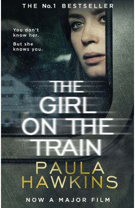
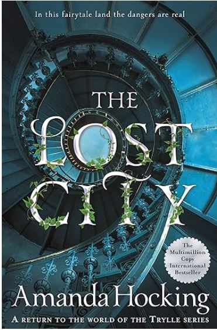
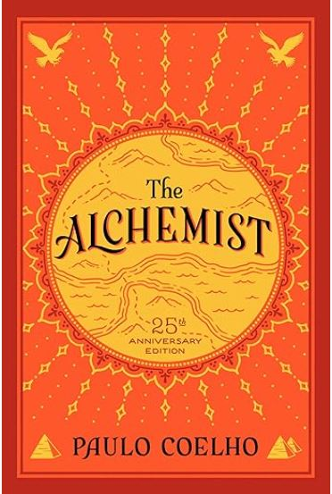
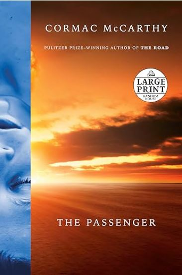
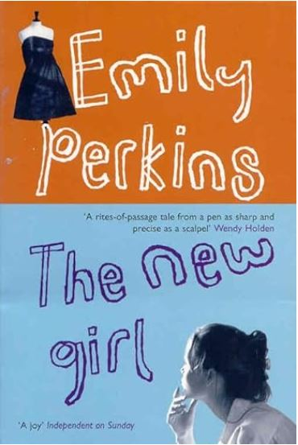
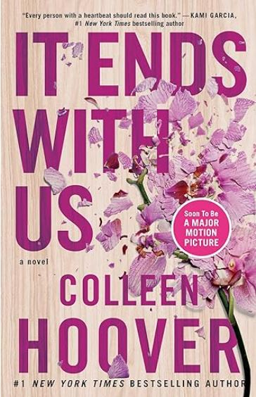
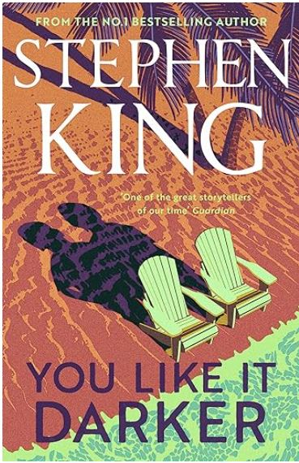
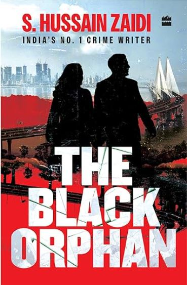
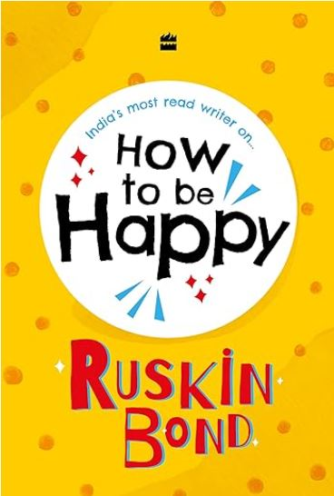
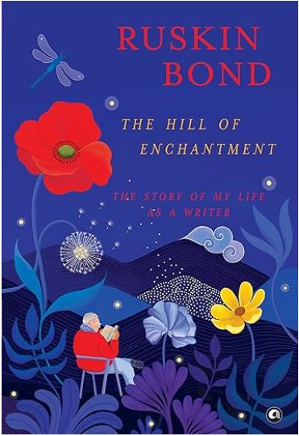

by Paula Hawkins
Adapted from Paula Hawkins' novel - an international phenomenon selling over twenty million copies worldwide - this gripping new play will keep you guessing until the final moment. Rachel Watson longs for a different life. Her only escape is the perfect couple she watches through the train window every day, happy and in love. Or so it appears. When Rachel learns that the woman she's been secretly watching has suddenly disappeared, she finds herself as a witness and even a suspect in a thrilling mystery in which she will face bigger revelations than she could ever have anticipated.
by Amanda Hocking
Welcome to a world in the shadow of our own, a fairytale land where the dangers are very real . . . In this first book in the Omte Origins trilogy, Amanda Hocking creates a fantastic adventure in her much-loved Trylle universe. Can she unlock the secrets of her past? Ulla Tulin was abandoned in an isolated Kanin town as a baby. Taken in by strangers and raised hidden away like many half-blood trolls, she has never stopped searching for her parents, or wondering about them. When Ulla hears of a project to help half-blood trolls, in the beautiful city of Merellä, she seizes the chance to discover her true heritage. She enlists the help of Pan Soriano, who is both handsome and resourceful – a half-human with telekinesis powers. And she must also contend with E...
by Paulo Coelho
A special 25th anniversary edition of the extraordinary international bestseller, including a new Foreword by Paulo Coelho. Combining magic, mysticism, wisdom and wonder into an inspiring tale of self-discovery, The Alchemist has become a modern classic, selling millions of copies around the world and transforming the lives of countless readers across generations. Paulo Coelho's masterpiece tells the mystical story of Santiago, an Andalusian shepherd boy who yearns to travel in search of a worldly treasure. His quest will lead him to riches far different—and far more satisfying—than he ever imagined. Santiago's journey teaches us about the essential wisdom of listening to our hearts, of recognizing opportunity and learning to read the omens strewn along life's path, and, most importantly, to follow our dreams.
by Cormac McCarthy
NEW YORK TIMES BEST SELLER • The first of a two-volume masterpiece, The Passenger series, from the Pulitzer Prize–winning author of The Road • The story of a salvage diver, haunted by loss, afraid of the watery deep, pursued for a conspiracy beyond his understanding, and longing for a death he cannot reconcile with God. A NEW YORK TIMES BEST BOOK OF THE YEAR "Blends the rowdy humor of some of McCarthy’s early novels with the parched tone of his more apocalyptic later work." —The New York Times Stella Maris, the second volume in The Passenger series, is available now. 1980, PASS CHRISTIAN, MISSISSIPPI: It is three in the morning when Bobby Western zips the jacket of his wet suit and plunges from the Coast Guard tender into darkness. His dive light il...
by Emily Perkins
It is the beginning of the summer holidays in a town in the middle of nowhere. Julia and her best friends Chicky and Rachel are school leavers emerging from their girlhood and waiting for the future. They - and their parents - are excited when Miranda, a charismatic and exotically beautiful woman from the city, arrives to teach a summer class. Miranda encourages curiosity and independence among her charges, but she also casts a shadow: the lifelong bonds between the girls begin to dissipate; confidences are broken; Julia yearns for the city, for an escape from boys who drink beer and race stolen cars across the gravel down by the bridge. But Miranda has her own doubts and betrayals. She too is asking: when will I be found out? The New Girl is a novel about girls and the women who shape them; about influence, identity, individual freedom and group responsibility.
by Colleen Hoover
In this “brave and heartbreaking novel that digs its claws into you and doesn’t let go, long after you’ve finished it” (Anna Todd, New York Times bestselling author) from the #1 New York Times bestselling author of All Your Perfects, a workaholic with a too-good-to-be-true romance can’t stop thinking about her first love. Lily hasn’t always had it easy, but that’s never stopped her from working hard for the life she wants. She’s come a long way from the small town where she grew up—she graduated from college, moved to Boston, and started her own business. And when she feels a spark with a gorgeous neurosurgeon named Ryle Kincaid, everything in Lily’s life seems too good to be true. Ryle is assertive, stubborn, maybe even a little arrogant. He’s also sensitive, brilliant...
by Paula Hawkins
Adapted from Paula Hawkins' novel - an international phenomenon selling over twenty million copies worldwide - this gripping new play will keep you guessing until the final moment. Rachel Watson longs for a different life. Her only escape is the perfect couple she watches through the train window every day, happy and in love. Or so it appears. When Rachel learns that the woman she's been secretly watching has suddenly disappeared, she finds herself as a witness and even a suspect in a thrilling mystery in which she will face bigger revelations than she could ever have anticipated.
by Amanda Hocking
Welcome to a world in the shadow of our own, a fairytale land where the dangers are very real . . . In this first book in the Omte Origins trilogy, Amanda Hocking creates a fantastic adventure in her much-loved Trylle universe. Can she unlock the secrets of her past? Ulla Tulin was abandoned in an isolated Kanin town as a baby. Taken in by strangers and raised hidden away like many half-blood trolls, she has never stopped searching for her parents, or wondering about them. When Ulla hears of a project to help half-blood trolls, in the beautiful city of Merellä, she seizes the chance to discover her true heritage. She enlists the help of Pan Soriano, who is both handsome and resourceful – a half-human with telekinesis powers. And she must also contend with E...
by Paulo Coelho
A special 25th anniversary edition of the extraordinary international bestseller, including a new Foreword by Paulo Coelho. Combining magic, mysticism, wisdom and wonder into an inspiring tale of self-discovery, The Alchemist has become a modern classic, selling millions of copies around the world and transforming the lives of countless readers across generations. Paulo Coelho's masterpiece tells the mystical story of Santiago, an Andalusian shepherd boy who yearns to travel in search of a worldly treasure. His quest will lead him to riches far different—and far more satisfying—than he ever imagined. Santiago's journey teaches us about the essential wisdom of listening to our hearts, of recognizing opportunity and learning to read the omens strewn along life's path, and, most importantly, to follow our dreams.
by Cormac McCarthy
NEW YORK TIMES BEST SELLER • The first of a two-volume masterpiece, The Passenger series, from the Pulitzer Prize–winning author of The Road • The story of a salvage diver, haunted by loss, afraid of the watery deep, pursued for a conspiracy beyond his understanding, and longing for a death he cannot reconcile with God. A NEW YORK TIMES BEST BOOK OF THE YEAR "Blends the rowdy humor of some of McCarthy’s early novels with the parched tone of his more apocalyptic later work." —The New York Times Stella Maris, the second volume in The Passenger series, is available now. 1980, PASS CHRISTIAN, MISSISSIPPI: It is three in the morning when Bobby Western zips the jacket of his wet suit and plunges from the Coast Guard tender into darkness. His dive light il...